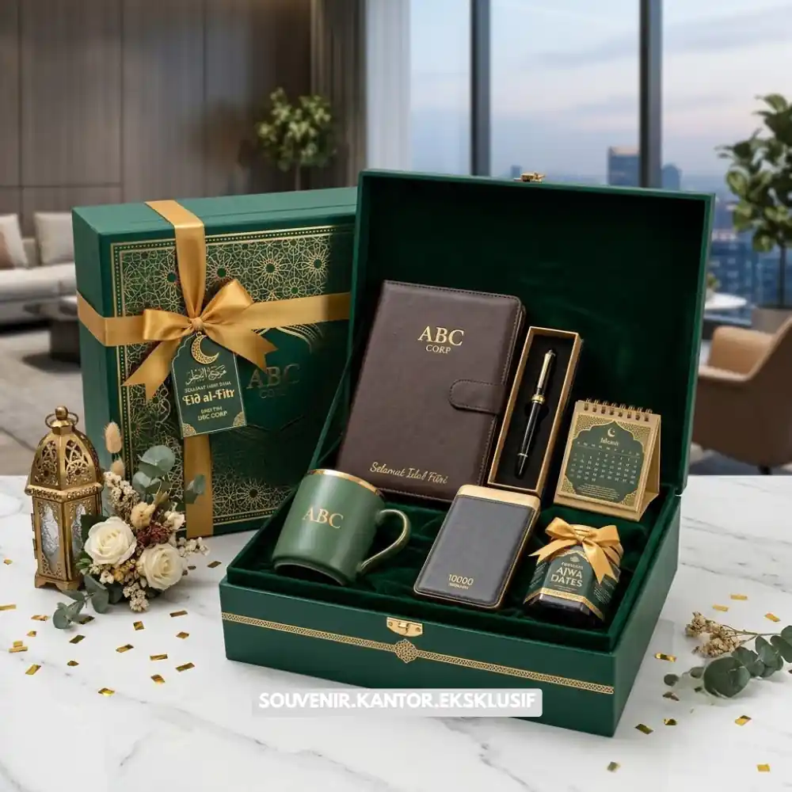

Daftar Isi
Corporate gift package hari raya adalah hadiah korporat bertema musiman yang diberikan perusahaan kepada klien dan karyawan pada momen perayaan tertentu.
Momen hari raya dan pergantian tahun menjadi kesempatan penting bagi perusahaan untuk menunjukkan apresiasi kepada klien, mitra bisnis, maupun karyawan melalui corporate gift package bertema musiman. Berbeda dari hadiah korporat pada umumnya, paket hari raya biasanya menghadirkan nuansa perayaan yang lebih hangat, baik dari sisi tema kemasan, pemilihan produk, maupun pesan yang disampaikan. Pendekatan ini membantu memperkuat hubungan bisnis sekaligus menciptakan momen berkesan di tengah suasana perayaan.
- Corporate gift package hari raya membawa nuansa perayaan yang lebih hangat dibanding hadiah reguler.
- Momen musiman seperti hari raya dan akhir tahun sering dimanfaatkan untuk program apresiasi rutin.
- Pemilihan produk perlu mempertimbangkan relevansi dengan suasana perayaan.
- Tema kemasan musiman membantu memperkuat kesan spesial dari hadiah yang diberikan.
- VendorSouvenir.web.id menghadirkan pilihan corporate gift package bertema hari raya yang siap disesuaikan dengan kebutuhan perusahaan Anda.
Mengapa Momen Hari Raya Penting untuk Program Hadiah Korporat?
Hari raya menjadi salah satu momen paling dinantikan dalam kalender bisnis karena secara alami membawa suasana kehangatan dan kebersamaan. Perusahaan yang memanfaatkan momen ini untuk mengirimkan hadiah kepada klien dan karyawan cenderung meninggalkan kesan positif yang lebih kuat dibandingkan pemberian hadiah pada waktu biasa.
Selain memperkuat hubungan bisnis, program hadiah musiman juga membantu menjaga engagement karyawan menjelang atau setelah momen perayaan. Banyak perusahaan menjadikan momen hari raya sebagai agenda tahunan yang konsisten dilakukan sebagai bagian dari budaya kerja dan strategi relasi eksternal.
Momen Musiman Lain yang Relevan bagi Perusahaan
Selain hari raya keagamaan, momen seperti pergantian tahun fiskal, ulang tahun perusahaan, atau perayaan pencapaian tahunan juga sering menjadi waktu yang tepat untuk mengirimkan hadiah korporat bertema khusus kepada klien maupun karyawan.

Koleksi Set Hampers Hari Raya Lengkap
Produk Apa yang Cocok untuk Corporate Gift Package Hari Raya?
Produk yang cocok untuk corporate gift package hari raya meliputi hampers makanan premium, parcel bertema perayaan, dan perlengkapan kerja dengan kemasan musiman.
Hampers Makanan dan Minuman Premium
Hampers berisi makanan dan minuman berkualitas tinggi menjadi pilihan populer untuk momen hari raya karena mudah dinikmati bersama keluarga maupun rekan kerja, sekaligus memberikan kesan hangat dan personal.
Parcel Bertema Perayaan
Parcel dengan kemasan bertema hari raya, lengkap dengan elemen dekoratif musiman, membantu menciptakan kesan perayaan yang lebih kuat dibandingkan kemasan hadiah korporat pada umumnya.
Perlengkapan Kerja dengan Sentuhan Musiman
Produk fungsional seperti tumbler atau notebook yang dikemas dengan nuansa musiman tetap relevan digunakan penerima setelah momen perayaan berakhir, sehingga nilai kebermanfaatannya tetap terjaga dalam jangka panjang.
Bagaimana Menyesuaikan Tema Hadiah dengan Momen Spesial Perusahaan?
Menyesuaikan tema hadiah dilakukan dengan memilih warna, elemen visual, dan jenis produk yang relevan dengan karakter momen perayaan yang sedang berlangsung.
Menyesuaikan Palet Warna dengan Suasana Perayaan
Palet warna kemasan sebaiknya disesuaikan dengan karakter momen perayaan, misalnya nuansa hangat untuk hari raya keagamaan atau nuansa elegan untuk momen pergantian tahun perusahaan.
Memilih Produk yang Relevan dengan Konteks Momen
Produk yang dipilih sebaiknya mempertimbangkan konteks momen perayaan agar hadiah terasa lebih relevan, misalnya produk bertema kebersamaan untuk hari raya keluarga atau produk kerja premium untuk perayaan pencapaian perusahaan.
Menentukan Segmentasi Penerima Hadiah
Perusahaan perlu menentukan segmentasi penerima, baik klien, mitra bisnis, maupun karyawan internal, karena masing-masing segmen dapat membutuhkan pendekatan tema dan jenis produk yang sedikit berbeda agar tetap relevan dan berkesan.
Corporate gift package hari raya menjadi cara efektif bagi perusahaan untuk memperkuat hubungan bisnis sekaligus menciptakan momen berkesan di tengah suasana perayaan musiman. Pemilihan produk yang relevan, tema kemasan yang sesuai momen, serta segmentasi penerima yang tepat menjadi kunci keberhasilan program hadiah ini.
VendorSouvenir.web.id siap membantu perusahaan Anda menghadirkan corporate gift package hari raya yang hangat, elegan, dan penuh makna. Wujudkan momen spesial perusahaan Anda bersama VendorSouvenir.web.id sekarang juga.

Solusi Hadiah Korporat Eksklusif
Pesan Corporate Gift Hari Raya Anda
Kami siap membantu mewujudkan hadiah korporat terbaik untuk mitra bisnis dan karyawan
Anda.
Dapatkan produk premium dengan kemasan eksklusif.
Dapatkan penawaran harga terbaik untuk pesanan massal!
FAQ
Kapan waktu ideal memesan corporate gift package untuk hari raya?
Sebaiknya pemesanan dilakukan jauh sebelum momen hari raya berlangsung agar proses produksi dan pengiriman dapat berjalan tepat waktu, terutama untuk kuantitas besar.
Apakah corporate gift package hari raya bisa dikombinasikan dengan custom logo perusahaan?
Ya, elemen branding seperti logo dan warna korporat tetap dapat diterapkan pada kemasan bertema hari raya tanpa menghilangkan nuansa perayaan musiman.
Apakah hampers makanan aman dikirim dalam jumlah besar ke berbagai kota?
Pemilihan produk dan kemasan yang tepat umumnya mempertimbangkan aspek keamanan pengiriman, sehingga penting berkoordinasi dengan penyedia layanan mengenai jenis produk yang sesuai untuk pengiriman jarak jauh.
Maroon Souvenir
Partner Corporate Gift terpercaya di Indonesia. Berpengalaman melayani ratusan perusahaan sejak 2018.
Lihat Portofolio Kami